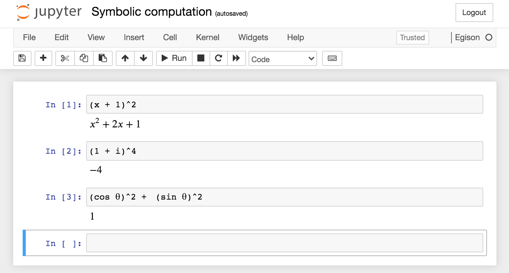

9Introduction to Computer Algebra Systems
A computer algebra system is a programming language that supports symbolic computation. Computer algebra systems treat unbound variables as symbols. Using a computer algebra system, one can perform computations such as \(x + x \rightarrow 2x\) and \((x + y)^2 \rightarrow x^2 + 2 x y + y^2\). Egison also supports such symbolic computation. This chapter explores what kinds of computations are possible with a computer algebra system.
9.1Declaring Symbols
A computer algebra system treats unbound variables as symbols. In Egison, symbols must be declared using the declare symbol statement before use. A type can also be specified for a symbol, as in declare symbol x : MathValue (the relationship between mathematical expressions and types is explained in Chapter 11).
declare symbol x, y, z
x -- xEgison, as a computer algebra system, has built-in definitions for addition and multiplication of symbols. Therefore, computations such as \(x + x \rightarrow 2x\) and \((x + y)^2 \rightarrow x^2 + 2 x y + y^2\) are possible.
x + x -- 2 * x
(x + y)^2 -- y^2 + x^2 + 2 * x yEgison automatically expands mathematical expressions into sum-of-products normal form. Sum-of-products normal form is a form of expression where multiplication appears on the inside and addition on the outside. Therefore, \((x + y)^2\) is expanded into the form \(x^2 + 2 x y + y^2\). In the output, multiplication between a coefficient and factors is displayed with *, while multiplication between symbols is displayed with whitespace.
The ordering of terms and factors in the output expression does not follow the order in which they appear in the user's input expression; they are sorted into a canonical order determined by the interpreter. For example, if we swap \(x\) and \(y\) in \((x + y)^2\) above and compute \((y + x)^2\), the output stays the same.
(y + x)^2 -- y^2 + x^2 + 2 * x y9.2Symbolic Function Application
For functions such as sqrt x and exp x that may take symbols as arguments, the library defines them to halt evaluation and return the expression as a symbolic value. A function application that remains as a symbolic value is displayed with a leading single quote (').
declare symbol x
sqrt 4 -- 2
sqrt x -- 'sqrt x
exp 1 -- e
exp x -- 'exp xFor function applications that cannot be further evaluated, such as sqrt 2, the library also defines them to halt evaluation and return the expression as is. Simplifications such as \(\sqrt{8} \rightarrow 2 \sqrt{2}\) are also defined in the library.
sqrt 2 -- 'sqrt 2
sqrt 8 -- 2 * 'sqrt 2Nested radicals are also opened up automatically when possible (for \(\sqrt{a+b\sqrt{c}}\), when \(a^2-b^2c\) is a perfect square).
sqrt (9 - 4 * sqrt 5) -- 'sqrt 5 - 2
sqrt (2 + sqrt 2) -- 'sqrt ('sqrt 2 + 2)Such mathematical functions are declared with the declare mathfunc statement, and their simplification at application time is defined with the declare apply statement. These declaration statements are explained in Section 11.3 of Chapter 11, and the single quote used in their definitions is explained in Section 10.3.
9.3Simplification of Expressions
Simplifications that one performs when working with mathematical expressions on paper, such as \(\sqrt{x} \cdot \sqrt{x} = x\) and \(sin^2\theta + cos^2\theta = 1\), are implemented in many computer algebra systems including Egison.
declare symbol x, `$\theta$`
sqrt x * sqrt x -- x
(sin `$\theta$`)^2 + (cos `$\theta$`)^2 -- 1Egison's simplification functionality is implemented in two layers. The internal representation of mathematical expressions and their normalization into sum-of-products normal form are implemented in Haskell inside the Egison interpreter, using Sweet Egison (a Haskell library that provides Egison's pattern matching capabilities, Chapter 8). On the other hand, most of the individual simplification rules, such as the ones above, are defined not as Haskell code but as simplification rule declarations written with Egison's own declare rule statement in the standard library.
Simplification rules for complex numbers and other entities are defined in the same way.
i^2 -- -1
w^3 -- 1
w + w^2 -- -1For example, the simplifications above for the imaginary unit \(i\) and the primitive cube root of unity \(w\) are realized by the following declarations in the standard library file lib/math/normalize.egi (https://github.com/egison/egison/blob/master/lib/math/normalize.egi).
declare rule auto term i^2 = -1
declare rule auto term w^3 = 1
declare rule auto term w^2 = -1 - wUsers can declare their own simplification rules with exactly the same declare rule statement (Section 11.1 of Chapter 11). Only a few simplification rules for which performance is critical, such as those used in computations with differential forms, are exceptionally implemented on the Haskell side (hs-src/Language/Egison/Math/Rewrite.hs).
Reduction of polynomial fractions is performed automatically by polynomial GCD (the Euclidean algorithm for univariate polynomials, subresultant PRS for multivariate ones).
(x^2 - 1) / (x - 1) -- x + 1
(x^2 - y^2) / (x - y) -- y + xNormal forms modulo an ideal can also be computed, based on Gröbner basis theory: the declare ideal statement generates a complete rule set from a set of relations mechanically, and the polyNF function computes normal forms explicitly (Section 11.2 of Chapter 11). Fully automating the simplification of mathematical expressions is nevertheless an extremely difficult problem, and Egison may not be able to properly simplify complex expressions.
Wolfram Language (Mathematica) is capable of such advanced expression simplification. Running the Egison interpreter with the “-M mathematica” option outputs expressions in a format readable by the Wolfram Language. By feeding this output to the Wolfram Language interpreter, one can leverage its advanced simplification capabilities.
$ egison -M mathematica
> declare symbol x
> x + sqrt 2
#mathematica|x + Sqrt[2]|#How users declare simplification rules and mathematical functions, select canonical forms with type annotations, extend the promotion tower of types, and work with quotient types — the details of the simplification system — is explained in Chapter 11.
9.4A Program to Solve Quadratic Equations -- Writing Algorithms that Process Expressions
In this section, we will write an algorithm to solve quadratic equations as a program. We define a function qF that takes a quadratic equation and returns its solutions, as shown below.
declare symbol x, a, b, c
qF (x ^ 2 + x + 1) x
-- ((1 / 2) * ('sqrt 3) * i + -1 / 2,
-- (-1 / 2) * ('sqrt 3) * i + -1 / 2)
qF (x ^ 2 + b * x + c) x
-- ((-1 / 2) * b + (1 / 2) * 'sqrt (b^2 - 4 * c),
-- (-1 / 2) * b + (-1 / 2) * 'sqrt (b^2 - 4 * c))
qF (a * x ^ 2 + b * x + c) x
-- ((-1 / 2) * a^-1 b + (1 / 2) * ('sqrt (b^2 - 4 * a c)) * a^-1,
-- (-1 / 2) * a^-1 b + (-1 / 2) * ('sqrt (b^2 - 4 * a c)) * a^-1)
qF (a * x ^ 2 + 2 * b * x + c) x
-- (- a^-1 b + ('sqrt (b^2 - a c)) * a^-1,
-- - a^-1 b - ('sqrt (b^2 - a c)) * a^-1)The output is displayed in sum-of-products normal form, with the fraction of the quadratic formula \(\frac{-b \pm \sqrt{b^2 - 4 a c}}{2 a}\) distributed over the terms. Furthermore, \(\frac{1}{a}\) is displayed as the negative power \(a^{-1}\) (the internal representation of mathematical expressions in Egison is a Laurent polynomial, which permits negative exponents). qF can be defined by simply writing out the quadratic formula directly. The following program defines qF using an auxiliary function qF'. qF' takes the quadratic coefficient as the first argument, the linear coefficient as the second, and the constant term as the third. For example, qF' 1 0 2 returns the solutions of the quadratic equation \(x^2 + 2 = 0\). coefficients is a function that takes a polynomial and a symbol, and returns the list of coefficients with respect to that symbol. qF' is simply defined as a function that returns a tuple consisting of \(\frac{-b + \sqrt{b^2 - 4 a c}}{2 a}\) and \(\frac{-b - \sqrt{b^2 - 4 a c}}{2 a}\).
def qF f x :=
match coefficients f x as list mathValue with
| [$a_0, $a_1, $a_2] -> qF' a_2 a_1 a_0
def qF' a b c :=
( ((- b) + sqrt (b ^ 2 - 4 * a * c)) / (2 * a)
, ((- b) - sqrt (b ^ 2 - 4 * a * c)) / (2 * a) )However, since the above formulation lacks an algorithmic feel, we will instead write an algorithm that derives the quadratic formula through completing the square. Completing the square is the operation of transforming a quadratic expression such as \(x^2 + b x + c\) into the form \((x + b / 2)^2 - b^2 / 4 + c\).
def qF' a b c :=
match (a, b, c) as (mathValue, mathValue, mathValue) with
| (#1, #0, _) -> (sqrt (- c), - sqrt (- c))
| (#1, _, _) ->
let (r1, r2) := withSymbols [x, y]
qF (substitute [(x, y - b / 2)] (x ^ 2 + b * x + c)) y
in ((- (b / 2)) + r1, (- (b / 2)) + r2)
| (_, _, _) -> qF' 1 (b / a) (c / a)When describing the algorithm for solving quadratic equations using completing the square, qF' becomes a function with three match clauses. The match clause on line 3 handles quadratic equations of the form \(x^2 + c = 0\). This clause returns the result \(\sqrt{-c}\) and \(-\sqrt{-c}\). The match clause on lines 4--7 handles quadratic equations of the form \(x^2 + b x + c = 0\), where the leading coefficient is \(1\). This clause is the core of the function, performing the completing-the-square operation. substitute is an Egison library function. substitute applies the substitution specified in the first argument to the expression in the second argument. Here, the substitution (x, y - b / 2) is specified in the first argument, so the substitution \(x = y - b / 2\) is applied to the expression \(x^2 + b x + c\). The first argument of substitute takes a list, allowing multiple simultaneous substitutions. After substituting \(x = y - b / 2\), this equation is transformed into a quadratic equation in \(y\) that matches the clause on line 3. Therefore, by passing this transformed equation to the qF function, we can obtain the solutions for \(y\). By adding \(\frac{-b}{2}\) to these solutions for \(y\), we obtain the solutions for the original variable \(x\). The withSymbols expression is a syntax for generating local symbols. The symbols specified in the list of the first argument (in this case, x and y) can be used as symbols within the expression of the second argument. Thanks to this feature of withSymbols, even if x or y are bound to specific integers elsewhere in the program, we do not need to worry about that inside the withSymbols expression. The match clause on line 8 handles quadratic equations where the leading coefficient is not \(1\). It divides the equation by the leading coefficient to convert it to an equation with leading coefficient \(1\), and passes it to the qF function again.
Although more complex than quadratic equations, it is interesting to write programs that solve cubic and quartic equations. These programs are available in the sample/math/algebra directory of the Egison source code.
9.5A Program for Differentiation -- Pattern Matching on Expressions
Egison has a library function d/d for performing differentiation. This function returns the result of differentiating the first argument with respect to the symbol given as the second argument. By naming the function d/d, differentiation can be expressed in a form close to mathematical notation. Egison allows / to be used in variable names.
d/d x x -- 1
d/d (x^2) x -- 2 * x
d/d (exp x) x -- 'exp x
d/d (log x) x -- x^-1
d/d (x * log x) x -- 'log x + 1
d/d (1 / log x) x -- - 'log x^-2 * x^-1The library d/d is organized with type classes so that it can also be applied directly to tensors (Chapter 12), and differentiation formulas for new mathematical functions can be added with the declare derivative statement introduced in Section 11.3. At its core, however, lies pattern matching on mathematical expressions. In this section, we extract this core and define a function d/d' that behaves like d/d.
d/d' can be defined as follows.
def d/d' (f: MathValue) (x: MathValue) : MathValue :=
match f as mathValue with
-- Differentiation of symbols
| #x -> 1
| symbol _ _ -> 0
-- Differentiation of function applications
| apply1 #exp $g -> exp g * d/d' g x
| apply1 #log $g -> 1 / g * d/d' g x
| apply1 #sqrt $g -> 1 / (2 * sqrt g) * d/d' g x
| apply2 #(^) $g $h -> f * d/d' (log g * h) x
| apply1 #cos $g -> (- sin g) * d/d' g x
| apply1 #sin $g -> cos g * d/d' g x
-- Differentiation of constants
| #0 -> 0
| _ * #1 -> 0
-- Differentiation of terms
| #1 * $fx ^ $n -> n * fx ^ (n - 1) * d/d' fx x
| $a * $fx ^ $n * $r -> a * d/d' (fx ^' n) x * r + a * fx ^' n * d/d' r x
-- Differentiation of polynomials
| poly $ts -> sum (map 1#(d/d' $1 x) ts)
-- Differentiation of quotients
| $p1 / $p2 ->
let p1' := d/d' p1 x
p2' := d/d' p2 x
in (p1' * p2 - p2' * p1) / p2 ^ 2The first argument \(f\) is pattern-matched as a mathematical expression. Lines 4--5 define the differentiation of symbols. If f is x itself, it returns \(1\); if f is a symbol other than x, it returns \(0\). Lines 7--12 describe the chain rule \(\frac{df(g(x))}{dx} = \frac{df(g(x))}{dg(x)} \frac{dg(x)}{x}\) for several basic function applications. For example, line 7 handles the differentiation of the exponential function. The body of this match clause represents \(\frac{de^{g(x)}}{dx} = e^{g(x)} \frac{dg(x)}{dx}\). Line 8 handles the differentiation of the logarithmic function. The body of this match clause represents \(\frac{dlog(g(x))}{dx} = \frac{1}{g(x)} \frac{dg(x)}{dx}\). Lines 14--15 define differentiation for constant terms. Constant terms differentiate to \(0\). Lines 17--18 define differentiation for terms that are products of the previously defined differentiable terms. This uses the facts that \(x^n\) differentiates to \(n x^{n-1}\) and that \(f g\) differentiates to \(f' g + f g'\). The chain rule is also used here. Line 20 defines the differentiation of polynomials. Since differentiation of monomials has already been defined, for a sum of monomials, we simply differentiate each term and sum the results. Lines 22--24 define differentiation for expressions with polynomials in both the numerator and denominator. This is defined using the quotient rule for differentiation.
9.6Computation with Vectors and Matrices -- Index Notation
A distinctive feature of Egison as a computer algebra system is the ability to concisely describe computations involving vectors, matrices, and their generalization, tensors. This is because Egison supports tensor index notation as a programming language feature -- a notation invented in the early twentieth century during research in differential geometry and general relativity.
Index notation expresses various kinds of tensor multiplication by attaching indices to tensors. For example, there are three types of multiplication between vectors: the tensor product, the Hadamard product, and the inner product. These are expressed by using different index patterns as follows.
declare symbol x1, x2, y1, y2, i, j
[| x1, x2 |]_i .[| y1, y2 |]_j
-- [| [| x1 y1, x1 y2 |], [| x2 y1, x2 y2 |] |]_i_j
[| x1, x2 |]_i .[| y1, y2 |]_i -- [| x1 y1, x2 y2 |]_i
[| x1, x2 |]~i .[| y1, y2 |]_i -- x2 y2 + x1 y1As shown above, in Egison, vectors are represented by enclosing their components in [| |]. Matrices are represented as vectors of vectors. From a functional programming perspective, index notation can be explained as adding indices as extra parameters to tensor multiplication functions, allowing a single function to serve multiple roles.
Other programming languages also have index notation as a language feature. Among them, Egison's distinguishing characteristic is that it incorporates index notation in a way that harmonizes well with functional programming. Thanks to this, higher-order functions and index notation can be used in combination. For example, an expression like \(g_{i_{1}j_{1}} g_{i_{2}j_{2}} ... g_{i_{n}j_{n}}\) can be written using the foldl function as follows.
foldl . 1 (map (\x -> g_[i_x]_[j_x]) [1..n])Since index notation is an important language feature of Egison, it is covered in detail in Chapter 12 and Chapter 14.
9.7Output Format for Expressions
The output format can be specified using the “-M” option. Running “egison -M latex” outputs results in LaTeX format.
$ egison -M latex
Egison Version 5.0.0
https://www.egison.org
Welcome to Egison Interpreter!
> declare symbol x
> x + sqrt 2
#latex|x + \sqrt{2}|#Running “egison -M mathematica” outputs results in Mathematica format.
$ egison -M mathematica
Egison Version 5.0.0
https://www.egison.org
Welcome to Egison Interpreter!
> declare symbol x
> x + sqrt 2
#mathematica|x + Sqrt[2]|#The LaTeX output also integrates with Jupyter Notebook. By using the Egison plugin for Jupyter Notebook, computation results are displayed interactively as mathematical expressions, as shown in Figures 14.2 and 14.4.
